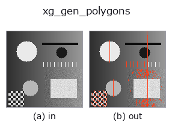

xldgeom op• Data kinds: contour → contour
• Call: fullseye.apply(img, "xg_gen_polygons", a=0.5, b=0.5) (the 2-D model is one image plus two scalar knobs a,b∈[0,1])
• HALCON equivalent: gen_polygons_xld (the HALCON reference is a useful guide to its meaning and parameters)

*The figure is the actual output on a synthetic 128×128 input. Left: input, right: output. Point clouds are drawn as a top-down scatter (brightness = z), 1-D series as a line plot, volumes as the maximum-intensity projection along z, videos as the middle frame, complex images as magnitude; return values that are not pictures are shown as the values themselves.*
Sweeping knob a (0.1 / 0.5 / 0.9, the other knob at its default):
▸ xg_gen_polygons: knob a sweep (docs site)
*Knob b does not change the output (measured: identical at 0.1 / 0.5 / 0.9).*
Stages (the ops that come before → this op, left to right):
▸ xg_gen_polygons: stages (docs site)
On other images (synthetic scene / photo / coins. Top row: inputs, bottom row: their outputs. Knobs at default):
▸ xg_gen_polygons: other inputs (docs site)
Douglas-Peucker polyline simplification; eps = a * contour bbox diagonal.
Thins each contour with the Ramer-Douglas-Peucker method into a polyline (polygon) with fewer vertices. The start and end points are always kept; if the distance of the point farthest from the chord of a segment exceeds eps, that point is adopted and the segment is split recursively. eps is, per contour, the diagonal length hypot(Δrow, Δcol) of that contour's bbox multiplied by a (clipped to [0,1]). a=0 gives eps=0 (only points lying exactly on the chord are dropped); the higher a, the coarser, and at a=1 only the 2 end points remain. b is unused.
Returns a {"shape", "cs"} contour dict. Contours with fewer than 3 points stay as copies. For a closed contour (first = last) the start and end point are the same point, so with large a it degenerates into 2 points (the same point) and area and orientation features become 0. To preserve the shape of closed contours, keep a small (measured: a 101-point ellipse of radius 5 to 8 becomes 9 points at a=0.05). The thinning returns a subset of the original points and creates no new points. Use it as preprocessing to reduce the cost of downstream xg_area_center or xg_regress_contours, or for detecting corners (vertices) of polylines.
• gallery2d_geometry family guide
• Sample-data catalog (download URLs / licences) — 2-D uses skimage.data (BSD/public domain) plus synthetic images; 3-D lists download URLs for real data sources (Stanford, PDS, …).
• Operator provenance and references — the sources of the research/methods this op family came from.
• The canonical algorithm (author, year) and its uses are named in the family usage guide above.
The program below has been verified to run (same input as the figure). In Studio's help this block becomes buttons that load and run it on the spot.
threshold 0.50 0.50 sk_find_contours 0.50 0.50 xg_gen_polygons 0.50 0.50
▸ Load this pipeline · Load & run
• gallery2d_geometry — py -3.11 examples/gallery2d_geometry.py
contour as input)identity · select_contours · smooth_contours · fit_line_contours · contours_to_region · count_contours · total_length · select_contours_xld
xldgeom)xg_moments · xg_area_center · xg_eccentricity · xg_orientation · xg_elliptic_axis · xg_height_width_ratio · xg_regress_contours · xg_clip_contours
*Provenance: ops.py — 2D operator registry. This per-op note is generated by tools/opdocs.py md (do not hand-edit).*
© 2026 Kazufumi Furuse — Fullseye operator documentation. Licensed under Apache-2.0.